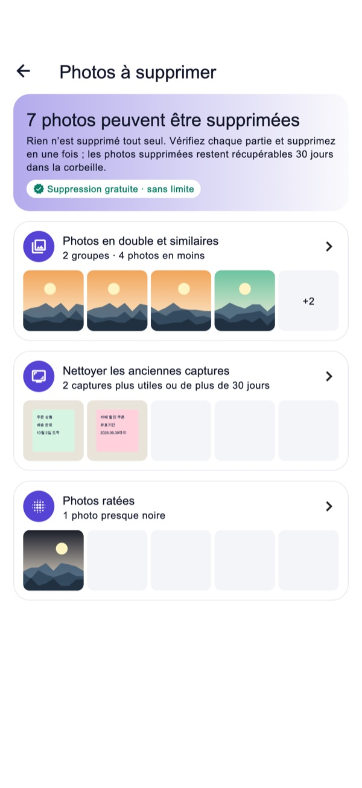

Supprimer les photos en double
1. Ce qui est rassemblé
« Photos à supprimer » dans l’onglet Photos rassemble trois sortes de photos.
• Photos en double et similaires : la même photo deux fois ou des rafales
• Anciennes captures : plus de 30 jours. Les captures montrant un reçu, un compte ou un mot de passe ne sont pas présélectionnées.
• Photos ratées : photos presque noires prises par erreur

2. Comment les supprimer
1. Dans chaque groupe, la meilleure photo est gardée et les autres sont présélectionnées.
2. Touchez une photo pour l’agrandir et changer celle qui est gardée.
3. Quand tout vous va, touchez « Supprimer … photos ».
3. Supprimée par erreur ?
Les photos supprimées restent récupérables 30 jours dans « Supprimés récemment » sur votre téléphone. Là où ce n’est pas possible, l’app vous prévient avant de supprimer.